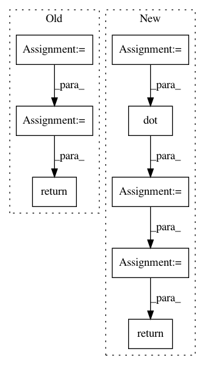

3dba9054b3c7bf4b9edabb430eb457a07e05b6ca,tensorly/mps_tensor.py,,mps_to_tensor,#Any#,8
Before Change
for k in range(1, D):
(r_prev, n_k, r_k) = factors[k].shape
G_k = tl.reshape(factors[k], (r_prev, n_k * r_k))
output_tensor = tl.dot(output_tensor, G_k)
output_tensor = tl.reshape(output_tensor, (-1, r_k))
output_tensor = tl.reshape(output_tensor, n_mode_dimensions)
return output_tensor
def mps_to_unfolded(factors, mode):
Returns the unfolding matrix of a tensor given in MPS format
After Change
for factor in factors[1:]:
rank_prev, _, rank_next = factor.shape
factor = tl.reshape(factor, (rank_prev, -1))
full_tensor = tl.dot(full_tensor, factor)
full_tensor = tl.reshape(full_tensor, (-1, rank_next))
return tl.reshape(full_tensor, full_shape)
def mps_to_unfolded(factors, mode):
Returns the unfolding matrix of a tensor given in MPS (or Tensor-Train) format
In pattern: SUPERPATTERN
Frequency: 3
Non-data size: 8
Instances
Project Name: tensorly/tensorly
Commit Name: 3dba9054b3c7bf4b9edabb430eb457a07e05b6ca
Time: 2018-07-05
Author: jean.kossaifi@gmail.com
File Name: tensorly/mps_tensor.py
Class Name:
Method Name: mps_to_tensor
Project Name: LCAV/pyroomacoustics
Commit Name: 5214393bb75498ded8fc140914edd79c1799af05
Time: 2017-04-04
Author: fakufaku@gmail.com
File Name: pyroomacoustics/beamforming.py
Class Name: Beamformer
Method Name: steering_vector_2D_from_point
Project Name: LCAV/pyroomacoustics
Commit Name: 7a77233231c67038271c9945760b7a1d711b242d
Time: 2017-04-04
Author: fakufaku@gmail.com
File Name: pyroomacoustics/beamforming.py
Class Name: Beamformer
Method Name: steering_vector_2D_from_point
Project Name: tensorly/tensorly
Commit Name: 3dba9054b3c7bf4b9edabb430eb457a07e05b6ca
Time: 2018-07-05
Author: jean.kossaifi@gmail.com
File Name: tensorly/mps_tensor.py
Class Name:
Method Name: mps_to_tensor